Regions and kingdoms
In development
Every character in Wychwood, by where they come from. A tile with a class on it is in the game and opens the champion's page; a tile marked in development is a portrait and a sentence, up for screening.
The Wardens' Lodge · The Coven · The Hushwood · The Mistway · The Hanging City · The Ossuary · The Frostfell · The Ironmarch · The Far Shores
14 characters, 6 in the game
The Wardens' Lodge
Rangers, gate-wardens and hearth folk of the great oaks. They keep the roads and the hunt.
 TankBramThe Standing Gate
TankBramThe Standing Gate MarksmanEddaThe Dawnwatch
MarksmanEddaThe Dawnwatch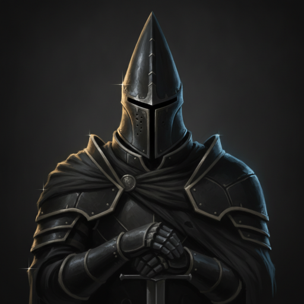
FighterJetThe Last Watch TankThaneThe First Banner
TankThaneThe First Banner MarksmanVaneThe True North
MarksmanVaneThe True North MarksmanWick & TattersThe Last Hunt
MarksmanWick & TattersThe Last Hunt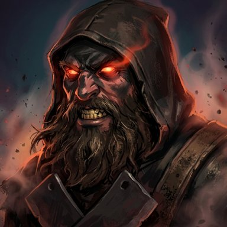
AshwoldThe Charcoal BurnerIn development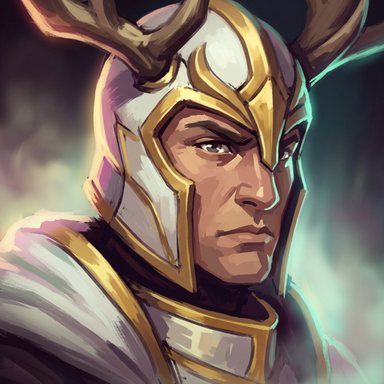
BramwellThe Stag KnightIn development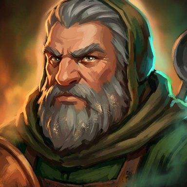
BrannockThe HearthkeeperIn development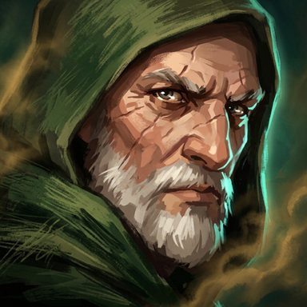
DunmoreThe Warden LordIn development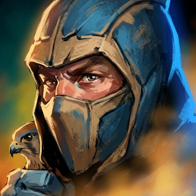
KestrelThe Sky WardenIn development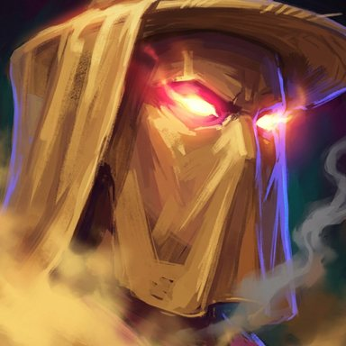
MarrowenThe BeekeeperIn development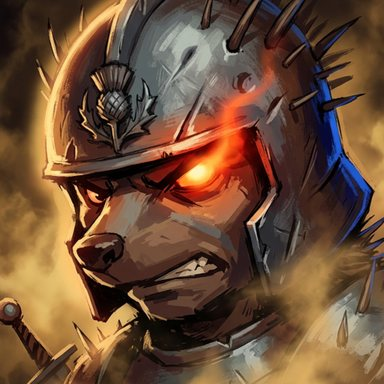
ThistleThe Hedgehog KnightIn development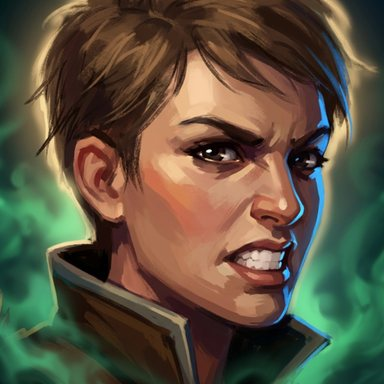
WrenThe FletcherIn development
8 characters, 1 in the game
The Coven
The witches' hollow: candle, cauldron and thorn, and everything stitched or brewed in it.
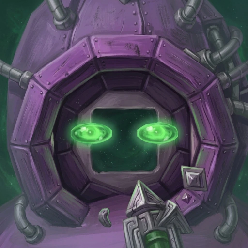
MageAzraThe Ill Company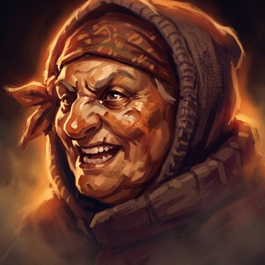
Baba RuskThe Oven WitchIn development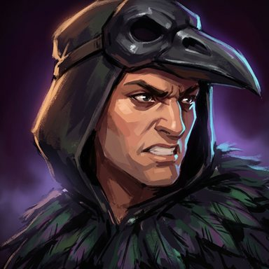
CorvinThe Rook-LordIn development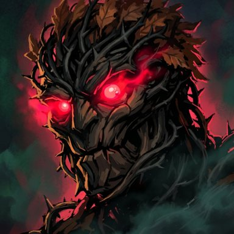
GorseThe Thorn GolemIn development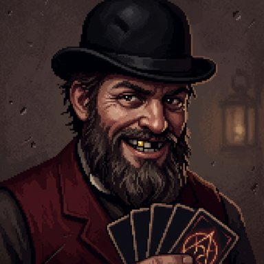
HexleyThe CardsharpIn development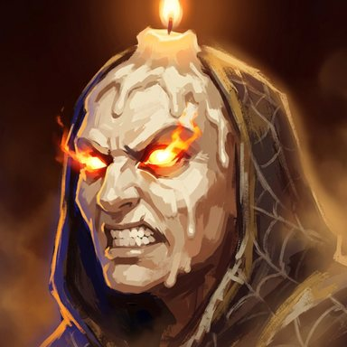
MabThe Candle CroneIn development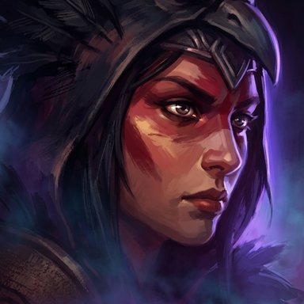
MorriganThe War CrowIn development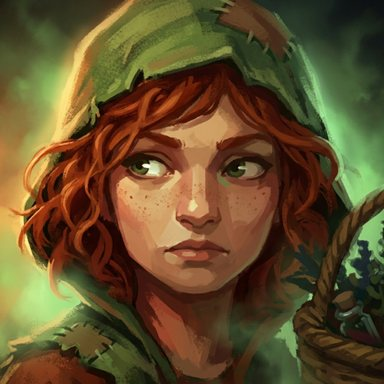
NettleThe Hedge WitchIn development
10 characters, 4 in the game
The Hushwood
The old deep wood and what grew up in it — fae, dryads, wyrmblood and worse.
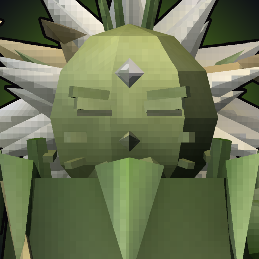
MageNezraThe Garden of Teeth FighterOryssaThe Wyrmblood
FighterOryssaThe Wyrmblood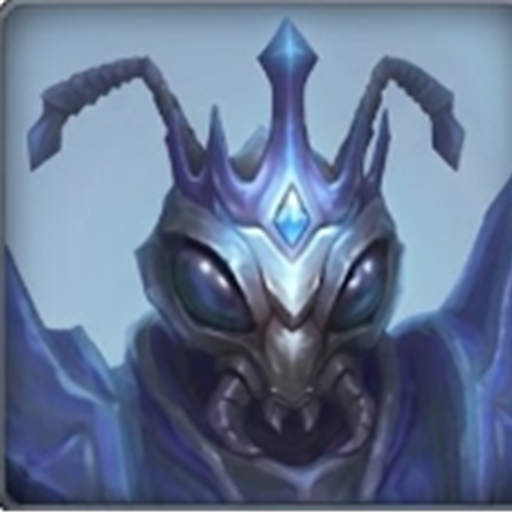
TankVrassThe Ant King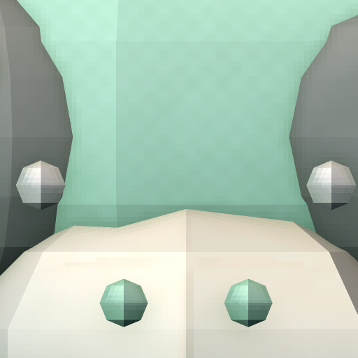
SupportYipThe Little Horror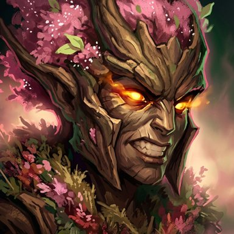
ElowenThe DryadIn development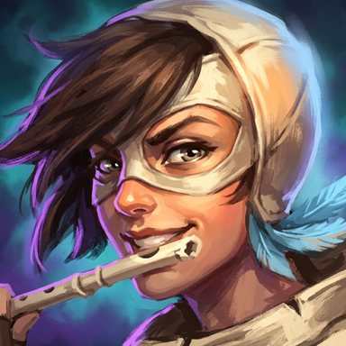
LarkThe WhistlerIn development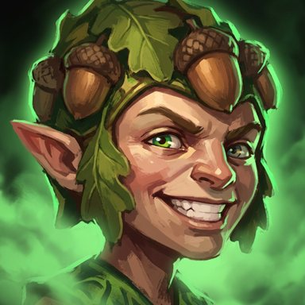
PuckThe TricksterIn development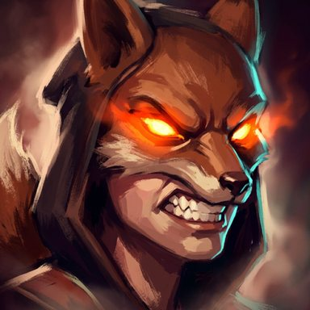
SorrelThe Fox ThiefIn development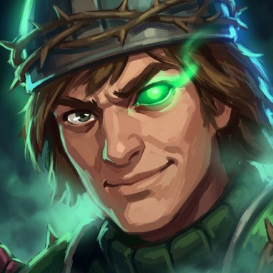
Tam LinThe Stolen KnightIn development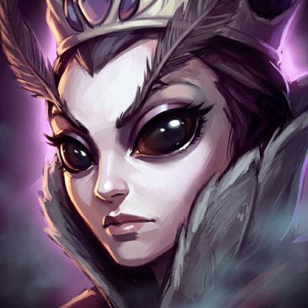
YsoldeThe Moth QueenIn development
9 characters, 2 in the game
The Mistway
River, bog and grey coast: the ferrymen, tollkeepers and drowned things of the water.
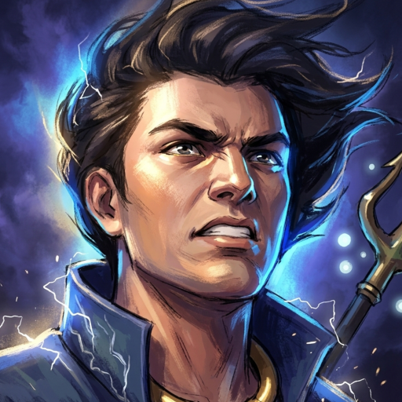
MageKaelenThe Stormcaller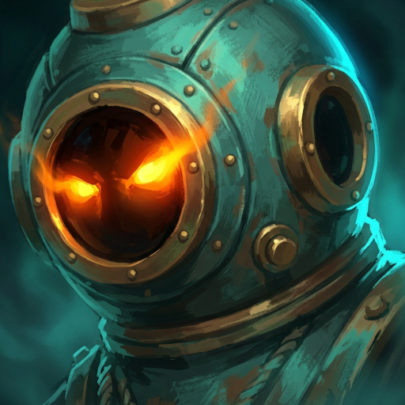
SupportMarosThe Harborbound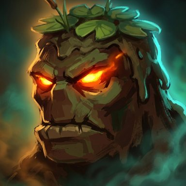
BrackwaterThe Bog LordIn development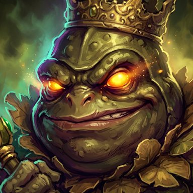
FenwickThe Toad KingIn development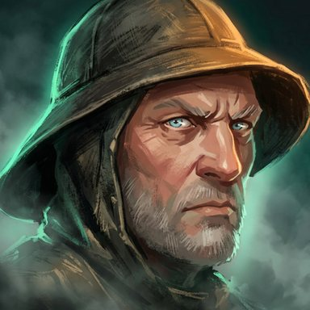
HalloranThe BoatmanIn development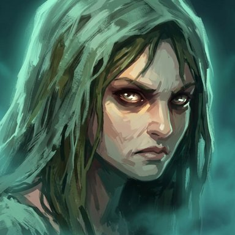
MerrowThe Drowned BrideIn development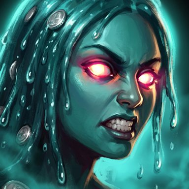
OonaThe Well MaidenIn development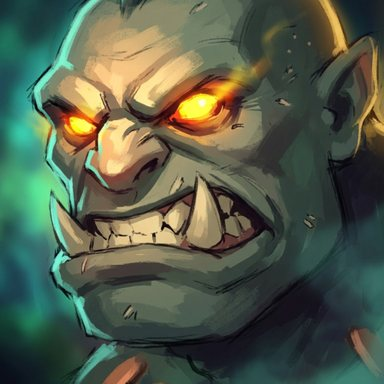
PellThe TollkeeperIn development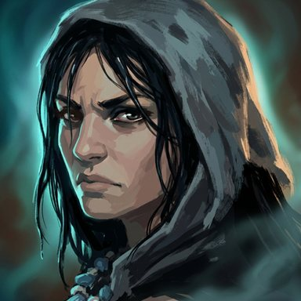
SelkieThe SealskinIn development
13 characters, 9 in the game
The Hanging City
The timber city on its stilts: guilds, garrison, trades and the stage.
 SupportDrayThe Wound-Taker
SupportDrayThe Wound-Taker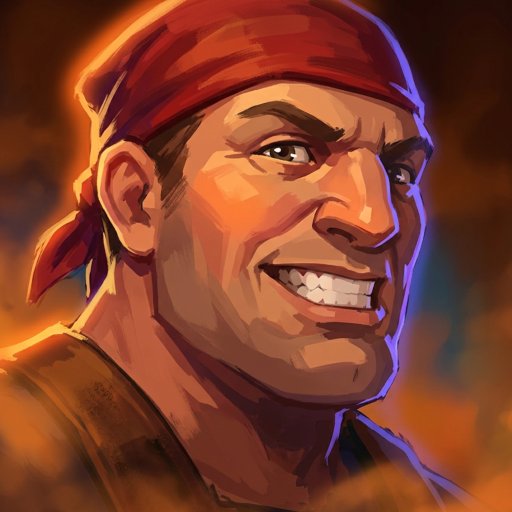
MageHollisThe Kilnwright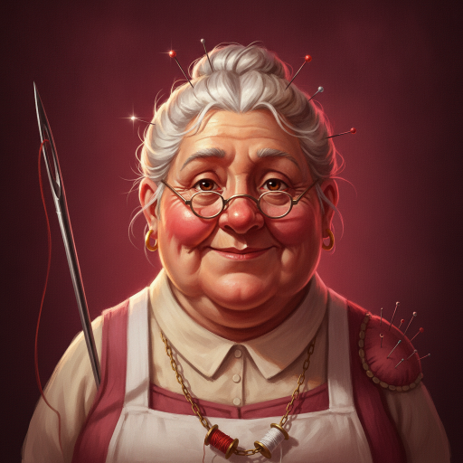
SupportLissThe Battlefield Seamstress FighterMeiThe Last Straw
FighterMeiThe Last Straw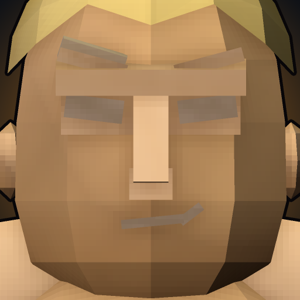
FighterMoxThe Main Event TankPikeThe Thin Man
TankPikeThe Thin Man FighterRenshuThe Hundredth Blade
FighterRenshuThe Hundredth Blade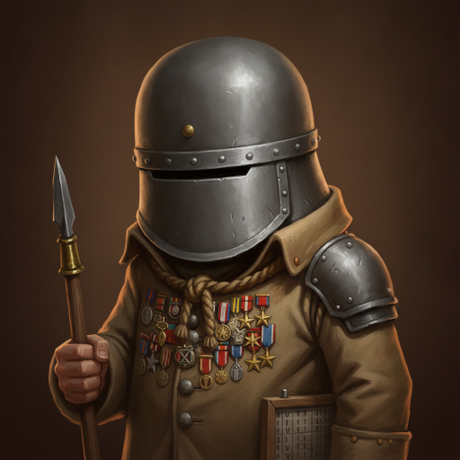
FighterSargeThe Ten-Thousandth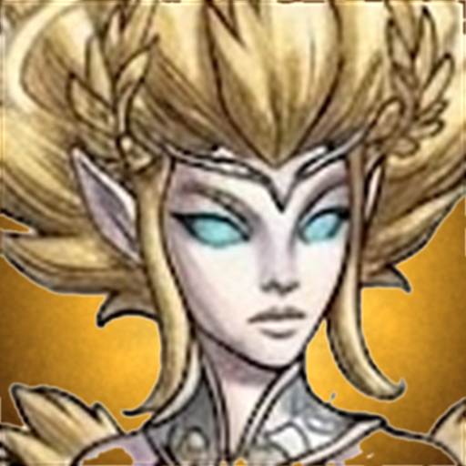
TankSeraThe Weight of Heaven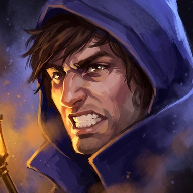
IdrisThe LamplighterIn development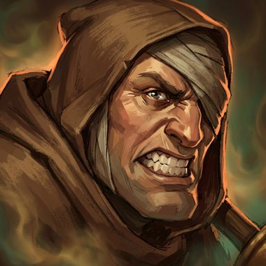
IvoThe Bell RingerIn development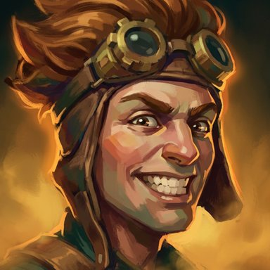
TobiasThe TinkerIn development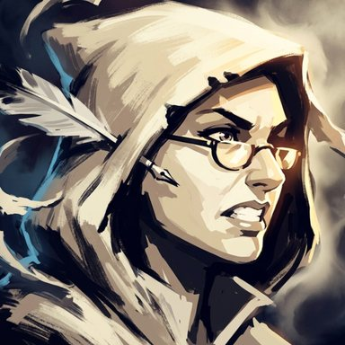
VellumThe BookbinderIn development
9 characters, 7 in the game
The Ossuary
The bone lands under the old skull: the dead, the debts and the ones who collect them.
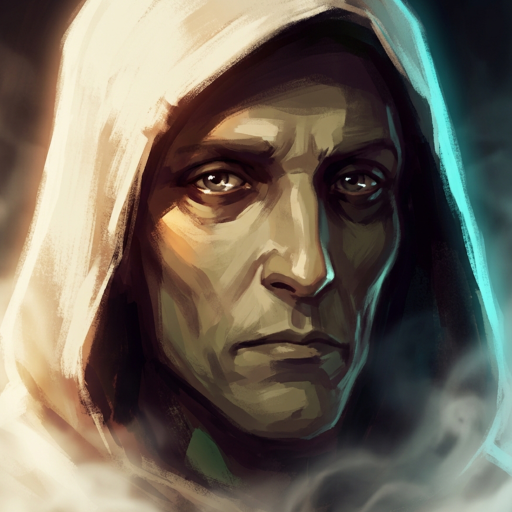
MageGallThe Patient Man FighterMorvaneThe Forfeit
FighterMorvaneThe Forfeit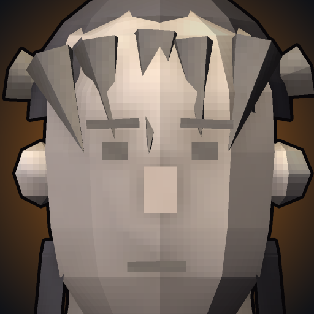
AssassinNilThe Unwritten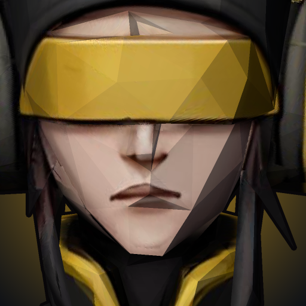
MageQuellThe Dead Note AssassinSableThe Hollow Blade
AssassinSableThe Hollow Blade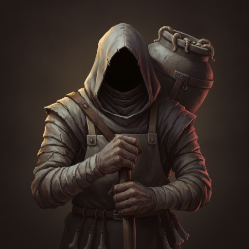
TankUrnThe Pallbearer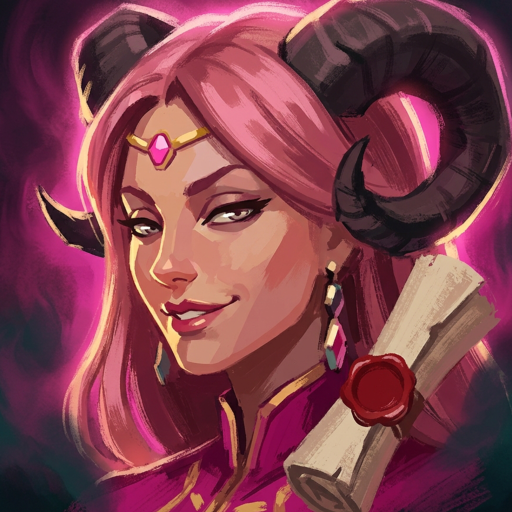
AssassinVessaThe Price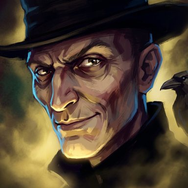
GrieveThe GravediggerIn development- SallowThe Harvest ReaperIn development
5 characters, 4 in the game
The Frostfell
The winter north: ice, raiders, the long walk and the wyrm.
- FighterCairnThe Long Walk
- TankFirnThe Slow Winter
- TankHobbThe Raid Leader
 FighterRimeThe Wyrm of Rime
FighterRimeThe Wyrm of Rime- LysThe Snow HareIn development
4 characters, 1 in the game
The Ironmarch
Forge and powder: smiths, bombards and the coal that feeds them.
- MageOrdoThe Last Bombard
- CinderThe Coal ImpIn development
- OrmondThe IronmongerIn development
- RookeThe HighwaymanIn development
25 characters, 3 in the game
The Far Shores
From beyond the wood entirely — other worlds, other stories, washed up here.
- FighterKettaThe One Spear
- MageYaraThe Untranslated
- AssassinZaxThe Unblinking
- AyameThe Twin-Tail BladeAnime pitch
- DaigoThe Gentle GiantAnime pitch
- GenThe Cyber-OniAnime pitch
- HanaThe Spirit DetectiveAnime pitch
- HaruThe Late BloomerAnime pitch
- HoshimiThe Starlight GirlAnime pitch
- KaoruThe RivalAnime pitch
- KazukiThe Blazing FistAnime pitch
- MikaThe Mecha PilotAnime pitch
- MochiThe MascotAnime pitch
- NekoThe Cat BurglarAnime pitch
- OboroThe Grinning CurseAnime pitch
- Old RenThe Dragon in a Child's ShapeAnime pitch
- ReiThe Nine-Tailed Shrine MaidenAnime pitch
- RyoThe DelinquentAnime pitch
- ShiroThe Shadow NinjaAnime pitch
- SuzuThe Reluctant ChosenAnime pitch
- TetsuoThe Wandering RoninAnime pitch
- TsubameThe Samurai AndroidAnime pitch
- UmiThe Mad TinkerAnime pitch
- ValgorThe Demon LordAnime pitch
- YoruThe Crow VigilanteAnime pitch